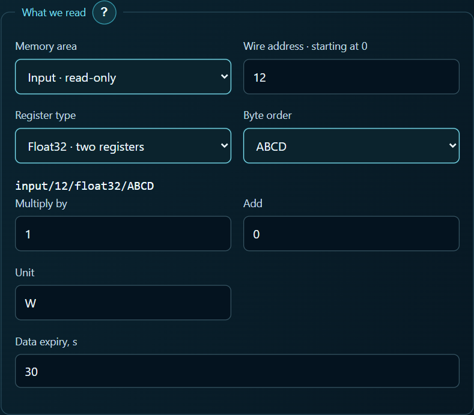

Read an Eastron meter’s active power on an Android tablet
My dashboard already has a temperature card from Home Assistant. The next card can show how many watts the house is drawing. This example uses an Eastron SDM120-Modbus on RS-485, a configured network gateway and ARAAMA 0.1.10.
Set up the dashboard
Connect the tablet to the gateway’s network. Enter the gateway IP and port in ARAAMA. Choose Modbus TCP if the gateway translates TCP requests to RTU, or RTU over TCP if it forwards raw RTU frames. Use the meter’s address for the Unit ID. Match the gateway’s RS-485 baud rate and parity to the meter.
Create an Active power tag. Eastron lists it as 30013 and gives 0x000C as its starting address. Enter 12 in the zero-based address field. Select input registers (function 04), Float32 and ABCD byte order for a gateway that preserves the meter’s byte order. The reading occupies two registers and comes in watts. Use a multiplier of 1 and an offset of 0. Eastron register map, page 5

Select this tag on a numeric card. Set the meter display to active power and compare readings under a steady load. For example, 0.72 kW on the meter corresponds to about 720 W on the tablet. ARAAMA 0.1.10 and user guides